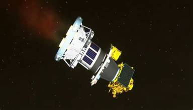
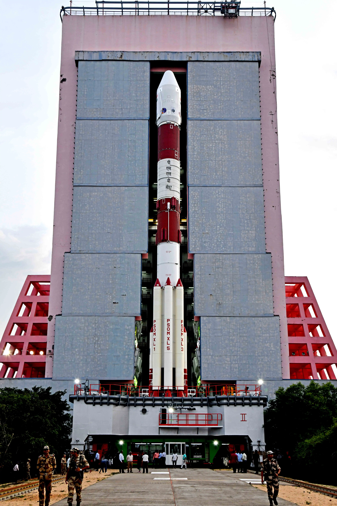
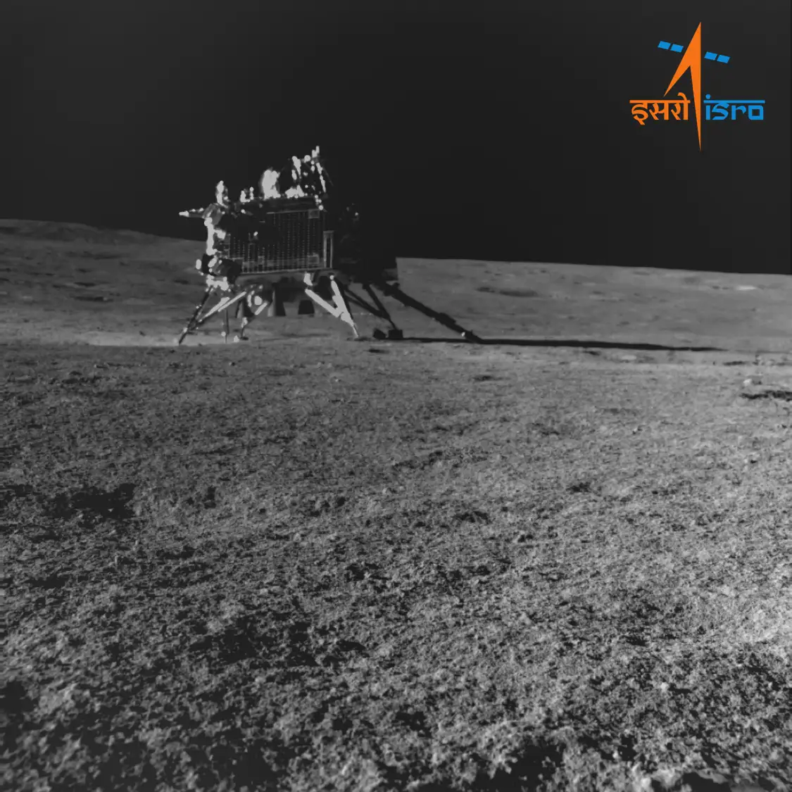
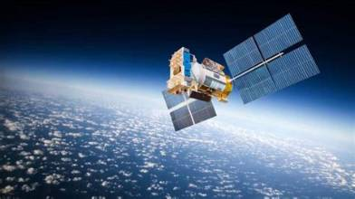
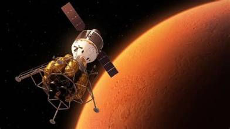

Explore Our Missions
Discover the important missions of the Indian Space Research
Organisation and their contribution to space science.

1 January 2024
XPoSat
X-ray Astronomy
India's first dedicated X-ray polarimetry mission,
designed to study bright astronomical X-ray sources.
Launch Vehicle
PSLV-C58
Target
X-ray Sources
Mission Type
Scientific Satellite
Status
Operational
Explore Mission →

2 September 2023
Aditya-L1
Solar Mission
India's first space-based solar observatory designed
to study the Sun and its atmosphere.
Launch Vehicle
PSLV-XL
Target
Sun
Orbit Region
L1 Point
Status
Operational
Explore Mission →

14 July 2023
Chandrayaan-3
Lunar Mission
India's mission that achieved a successful soft landing
near the Moon's south polar region and deployed a rover.
Launch Vehicle
LVM3
Target
Moon
Mission Type
Lander and Rover
Status
Mission Completed
Explore Mission →

22 July 2019
Chandrayaan-2
Lunar Mission
A lunar exploration mission that continues to provide
valuable observations of the Moon through its orbiter.
Launch Vehicle
GSLV Mk III
Target
Moon
Mission Type
Orbiter and Lander
Status
Orbiter Operational
Explore Mission →

28 September 2015
AstroSat
Space Observatory
India's first dedicated multi-wavelength space observatory
for studying stars, galaxies and other celestial objects.
Launch Vehicle
PSLV-C30
Target
Deep Space
Mission Type
Astronomy
Status
Operational
Explore Mission →

5 November 2013
Mangalyaan
Mars Mission
India's first interplanetary mission, which successfully
entered Mars orbit and studied the Red Planet.
Launch Vehicle
PSLV-C25
Target
Mars
Mission Type
Orbiter
Status
Mission Concluded
Explore Mission →
Exploring Beyond Earth
Every space mission helps India discover new possibilities
and understand the universe better.
Visit Official ISRO Website →